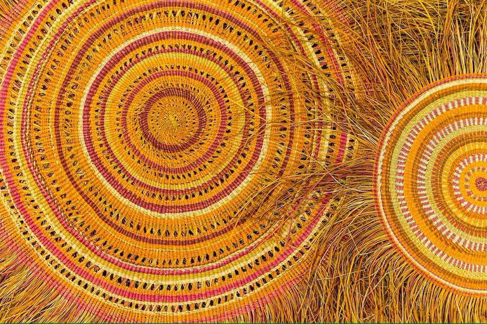
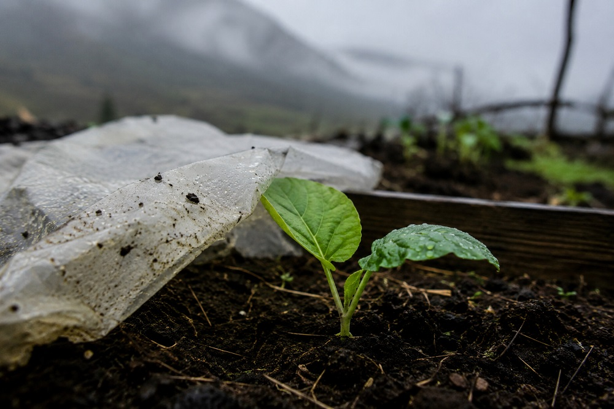
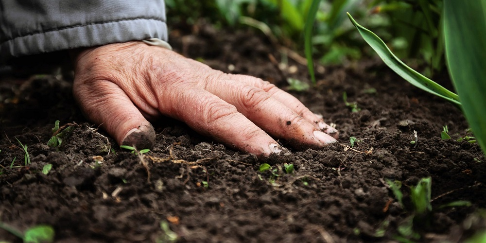

1Donde empezar
¡Bienvenidx! Mi nombre es Edgardo Civallero y escribo desde la niebla del bosque alto-andino y el páramo de Cundinamarca, Colombia. Soy bibliotecario, archivista, músico, escritor y artista visual, y me desempeño, entre otras cosas, como consultor semántico, investigador, editor, diseñador, conferencista, docente, naturalista y tejedor de memorias.
Este sitio reúne mis proyectos en bibliotecología, archivística, sonidos, artes visuales, biología / ecología y gestión del conocimiento y la memoria: áreas en donde la información se entreteje con el silencio, la investigación se topa con la descomposición, y los instrumentos musicales (y, a veces, las marionetas de mi taller) discuten con los metadatos.
Usa la barra lateral para navegar por tema. Explora, lee, chismosea. Y si alguna hebra te resuena, escríbeme. ¡Buen camino!
2Nuevas tramas

No hay servidor central
Publicado el 10 de abril de 2026
La última entrada en mi blog Crónicas de un biblio-naturalista, "No hay servidor central", examina el bosque nublado como modelo de un sistema de memoria descentralizado. Dejando de lado el supuesto de que la coherencia requiere centralización, el texto explora cómo la circulación, la transformación y la redundancia distribuida sostienen la continuidad informacional sin necesidad de repositorios fijos ni de control centralizado. Argumenta que la memoria no depende de su almacenamiento en un único sitio, sino de la densidad de interacciones dentro de un sistema, donde la coherencia emerge de procesos en curso más que de una autoridad central.
3Crónicas de lo hecho
Bitácora de textos, sonidos y gestos recientes
Publicado el 29 de marzo de 2026
Durante los últimos días (del 16 al 29 de marzo), cuatro textos terminaron uniéndose en una misma línea de indagación. Escritos en distintas secciones —notas, crónicas y bitácoras—, forman un movimiento continuo que comienza en el suelo y se extiende hacia la arquitectura de los sistemas de conocimiento.
Se abre con Desde Quisquiza (03): Suelo, una nota de campo sobre suelos compactados en un bosque nublado altoandino. El terreno parece intacto, pero, justo debajo de la superficie, una capa densa lo detiene todo: el agua escurre, las raíces dudan y fracasan, y nada logra entrar ni sostenerse. Antes de plantar cualquier cosa, la estructura tiene que abrirse — lentamente, físicamente y sin garantía de resultados inmediatos. La misma condición aparece en muchos sistemas archivísticos y bibliotecarios, donde las estructuras subyacentes también pueden compactarse, endurecerse y empezar a resistir aquello que no encaja.
Esa lógica se desplaza lateralmente en El musgo es un sistema marginal, donde la atención pasa del sustrato a la superficie. El musgo no construye estructuras primarias: se adhiere a lo ya formado y acumula condiciones residuales — humedad, partículas, derivas microclimáticas. Registra aquello que el sistema no reconoce formalmente, y no lo hace almacenando eventos, sino reteniendo trazas de continuidad en los bordes. En términos documentales, se trata de rastros que rara vez ingresan en los registros formales, pero que configuran silenciosamente la manera en que los sistemas son habitados.
La cuestión de los márgenes entra entonces de forma explícita en la bibliotecología en Los márgenes como infraestructuras. Allí, los datos residuales —anotaciones, patrones de acceso, clasificaciones informales— dejan de entenderse como subproductos secundarios y pasan a considerarse componentes estructurales de los sistemas de información. Lo que se acumula en la periferia proporciona el único registro continuo de cómo esos sistemas son realmente usados, recorridos y transformados a lo largo del tiempo.
Finalmente, Las raíces radicales de la bibliotecología comunitaria sitúa estas dinámicas en una escala histórica más amplia. El texto rastrea cómo las infraestructuras de conocimiento han sido construidas desde abajo —en bibliotecas obreras, redes de ayuda mutua y archivos comunitarios—, all{i donde los márgenes no eran zonas periféricas, sino el propio suelo desde el cual los sistemas emergían.
En conjunto, estos textos trazan un desplazamiento: del suelo compactado al crecimiento marginal, de ese crecimiento a los datos residuales, y de allí a las condiciones políticas e históricas de las infraestructuras del conocimiento. El movimiento se repite a distintas escalas. Cuando el sustrato se endurece, nada entra. Cuando los márgenes se eliminan, nada se acumula. Y cuando la acumulación se pierde, los sistemas olvidan cómo funcionan. Lo que aparece aquí no es una secuencia de temas, sino una insistencia: las condiciones que sostienen la complejidad rara vez se encuentran en el centro.
4Próximamente, si la niebla lo permite

Próximos escritos, eventos y trabajos en curso
Publicado el 1 de marzo de 2026
En los próximos meses comenzarán a aflorar aquí nuevos hilos — si las condiciones lo permiten.
Uno de ellos es el relanzamiento de Wayrachaki Editora, un sello independiente dedicado a libros digitales de acceso abierto escritos desde los márgenes: manuales, crónicas y textos editoriales sobre bibliotecas en resistencia, oralidad insurgente, archivos frágiles y prácticas de conocimiento moldeadas por el conflicto, la escasez y el territorio. El sello retoma su trabajo con el mismo espíritu nómada que le dio forma en sus inicios, publicando textos que nunca pasarían un filtro académico y que jamás estuvieron pensados para hacerlo.
Otro hilo toma forma a través de Tela de Araña, un conjunto de servicios de consultoría y acompañamiento centrados en el diseño semántico, los sistemas de metadatos, los archivos comunitarios y las infraestructuras de conocimiento allí donde los modelos convencionales fallan. Este trabajo se despliega de manera lenta y situada, mediante el acompañamiento más que mediante soluciones, y será documentado aquí a medida que ocurra.
Junto a estos desarrollos, continuarán las crónicas, notas y ensayos. La escritura seguirá desplazándose entre bosques y bibliotecas, entre la teoría y el terreno, siguiendo las preguntas a medida que surgen y no según un plan previo. Nada de lo que aparece aquí está programado de antemano. Algunas cosas llegarán en silencio. Otras quizá no lleguen nunca.
Al fin y al cabo, la niebla tiene su propio ritmo.
5Textos, sonidos y trazas recogidas
Archivo de trabajos publicados y registros sonoros
Publicado el 1 de marzo de 2026
A lo largo de las últimas semanas he ido reorganizando mis publicaciones pasadas en un archivo estructurado. Textos que estuvieron dispersos en revistas, congresos y plataformas digitales habitan ahora secciones definidas que reflejan los territorios intelectuales de los que surgieron. El archivo incluye actualmente Bibliotecas desde el Sur, Bibliotecas en los márgenes, Bibliotecas públicas, Bibliotecología e investigación y Brecha digital, junto con selecciones curadas del Blog Bibliotecario, de Bitácora de un bibliotecario y de mis contribuciones al Princh Library Blog.
Estas secciones no funcionan como un depósito estático. Son espacios activos: se actualizan, se amplían y, en ocasiones, se recontextualizan a medida que las preguntas evolucionan y los hilos vuelven a conectarse. En conjunto, trazan el arco de una trayectoria atravesada por la crítica decolonial, los territorios periféricos, la responsabilidad institucional, la desigualdad tecnológica, la práctica documental y la política de la memoria.
Lo que aparece hoy en los textos más recientes crece sobre esas capas anteriores. El archivo no es un fondo decorativo. Es el cimiento.